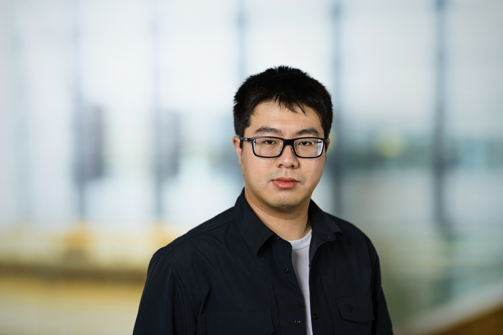

MIMO radar for automotive sensing
Radar system concepts for richer perception in automotive environments, with attention to measurement quality and target information.

PhD candidate at TU Delft
I work on MIMO radar, wave polarimetry, polarimetric calibration, and automotive sensing, with a focus on making radar measurements more informative, reliable, and physically interpretable.
My research connects radar system design, electromagnetic wave polarization, calibration, and sensing interpretation. The common thread is turning polarimetric radar measurements into reliable information for automotive perception.
Radar system concepts for richer perception in automotive environments, with attention to measurement quality and target information.
Using polarization diversity to describe how electromagnetic waves interact with targets and sensing scenes.
Calibration methods for polarimetric radar measurements, including practical MIMO topologies and off-broadside effects.
Journal and conference publications spanning polarimetric MIMO automotive radar, wave polarimetry, calibration, and earlier antenna array work, including first-author and co-authored papers.
Changxu Zhao, Yanki Aslan, Alejandro Garcia-Tejero, Wietse Bouwmeester, Alexander Yarovoy. International Journal of Microwave and Wireless Technologies, 17(9), 1556-1567, 2025.
Changxu Zhao, Yanki Aslan, Alexander Yarovoy. EuCAP 2025.
Máté L. Iványi, Changxu Zhao, Yanki Aslan, Alexander Yarovoy, Marco Spirito. IEEE CAMA 2025.
Changxu Zhao, Alejandro Garcia-Tejero, Wietse Bouwmeester, Yanki Aslan, Oleg Krasnov, Alexander Yarovoy. EuRAD 2024.
Feza Turgay Celik, Changxu Zhao, Alexander Yarovoy, Yanki Aslan. IEEE AP-S/URSI 2024.
Changxu Zhao, Alexander Yarovoy, Antoine Roederer, Yanki Aslan. EuCAP 2023.
Changxu Zhao, Yanki Aslan, Alexander Yarovoy, Antoine Roederer. IEEE CAMA 2023.
From electrical engineering and intelligent control to microwave sensing, the path has stayed close to one question: how can radar systems use electromagnetic waves to see the world more clearly?
Researching MIMO radar, wave polarimetry, polarimetric calibration, and automotive sensing in the MS3 group.
Graduated cum laude after a thesis on series-fed antenna arrays with reduced beam squint and distortion.
Electrical Engineering and Intelligent Control at Shanghai Maritime University, plus Engineering cum laude at HZ University of Applied Sciences.
I am open to research conversations around MIMO radar, wave polarimetry, polarimetric calibration, automotive sensing, and applied electromagnetic sensing.